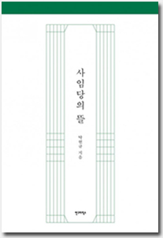

소개
사임당의 뜰 속에 숨겨진 생명들을
간송미술관 연구원 탁현규가 오감으로 찾아내다
우리나라 최초의 여성 화가인 사임당, 그녀가 남긴 작품들 가운데 결코 빼놓을 수 없는 작품인 초충도는 이름 그대로 뜰에 사는 풀과 벌레를 소재로 한 그림을 말한다. 따라서 사임당의 그림은 사람과 가장 가까운 자연인 뜰이 주 무대였다. [사임당의 뜰]은 그동안 율곡 이이의 어머니이자 현모양처로 알려졌던 사임당의 생애를 말하는 대신에 화가이자 예술가로서 사임당이 남긴 화첩 속 그림이 전하는 생명의 메시지를 이야기한다.
이 책의 지은이 탁현규는 우리나라 최초의 사립미술관인 간송미술관의 연구원으로 옛 그림들을 소개하는 [그림소담] [고화정담] 등을 집필했다. 오랫동안 옛 그림을 보아온 지은이가 생각하는 초충도의 진짜 매력은 무엇일까? 오늘날에도 사임당이 크게 회자되고 초충도가 주목을 받는 이유를 “살아있는 것에 대한 관심과 사랑이 있기 때문”이라 밝힌다. 시멘트와 아스팔트로 덮여 풀 한 포기 자라지 못하는 땅에서 풀벌레와 어울리는 삶은 돈을 내고 경험하는 행위가 되어버렸지만, 생명체보다 사람의 감각을 더 크게 자극하는 일은 없기 때문에 시대가 지나도 초충도의 의미는 여전히 유효한 것이다.
[사임당의 뜰]은 크게 2부로 구성되어 있다. 1부 <사임당의 화첩>과 <매창의 화첩>은 사임당의 그림 스물여섯 점과 매창의 그림 네 점을 소개한다. 책에 수록한 사임당 초충도는 사임당에게 전칭되는 작품들 가운데 간송미술관과 국립중앙박물관, 오죽헌시립미술관이 소장하고 있는 작품이다. 이 초충도는 사임당 그림과 함께 여러 문인의 글과 시가 전해지는 중요 작이기도 하다. 또한 그동안 잘 알려지지 않았던 사임당의 큰딸인 매창의 화조도를 함께 실었는데 ‘작은 사임당’이라 불렸던 매창은 사임당과는 달리 먹으로 매화와 대나무 등을 그렸다. 사군자의 시초를 지은이는 매창의 화조도에서 발견한다. 2부 <함께 이야기 나누며>에서는 그동안 사임당에게 궁금했으나 물을 수 없었던 이야기들을 가상의 대화를 통해 묻고 답한다. 매창, 율곡, 사임당과의 대화를 통해서 ‘어머니로서 사임당’뿐만 아니라 글을 짓고 그림을 그리는 ‘여성 예술가 사임당’을 소개한다.